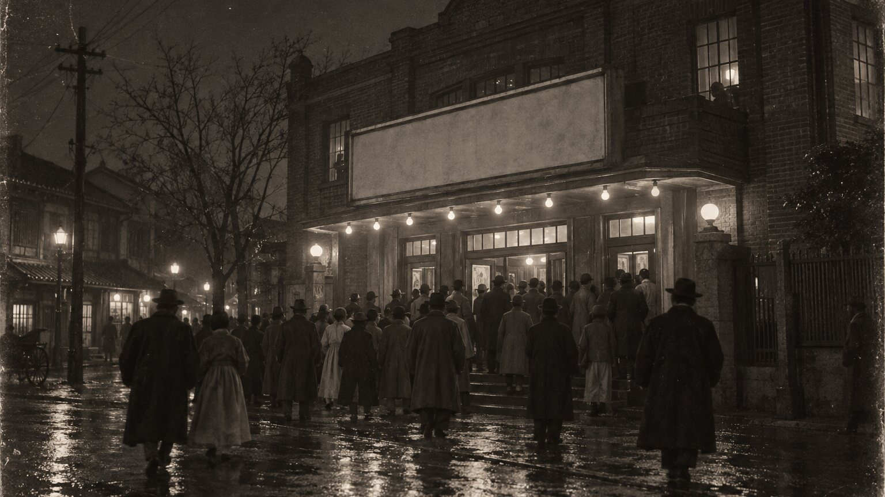
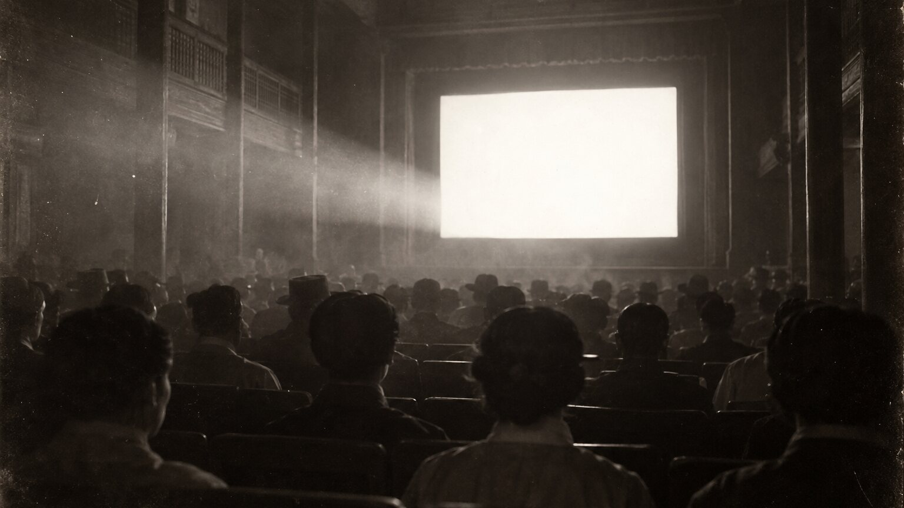
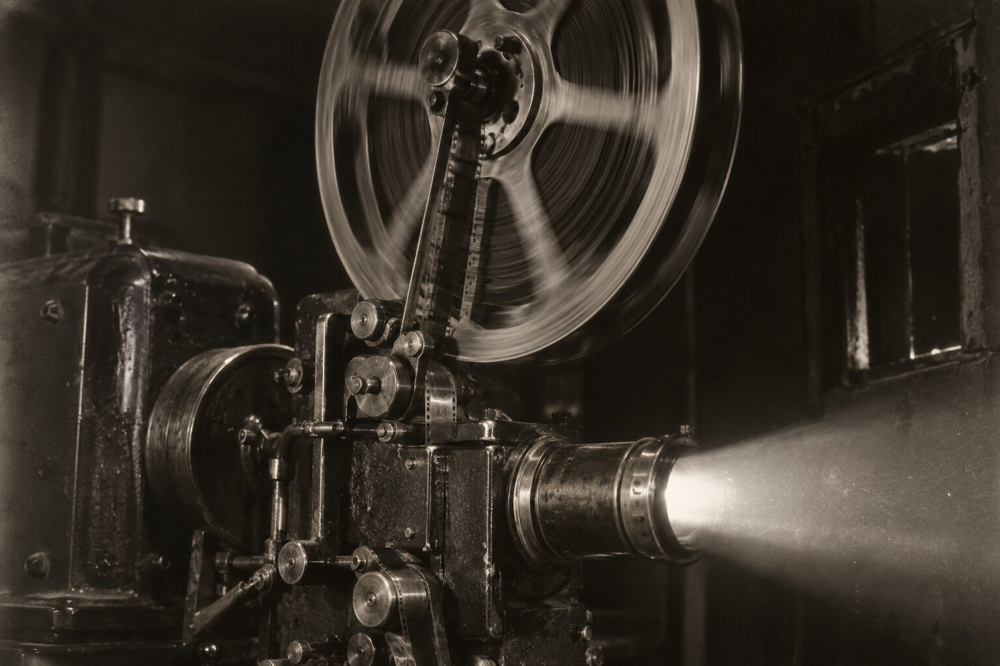
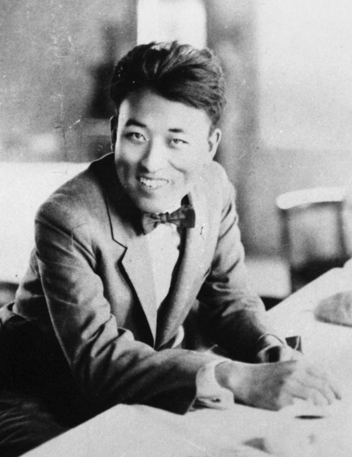
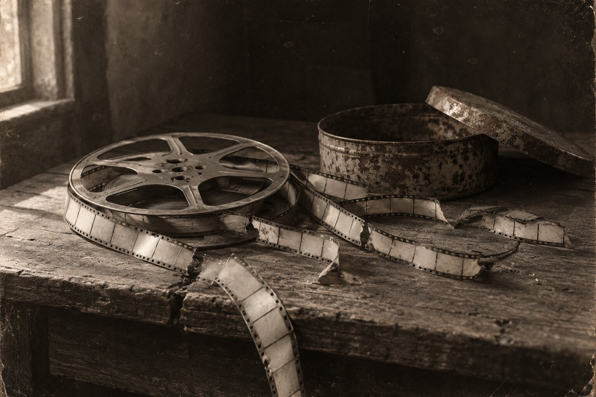
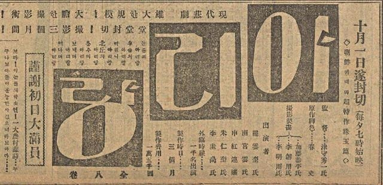
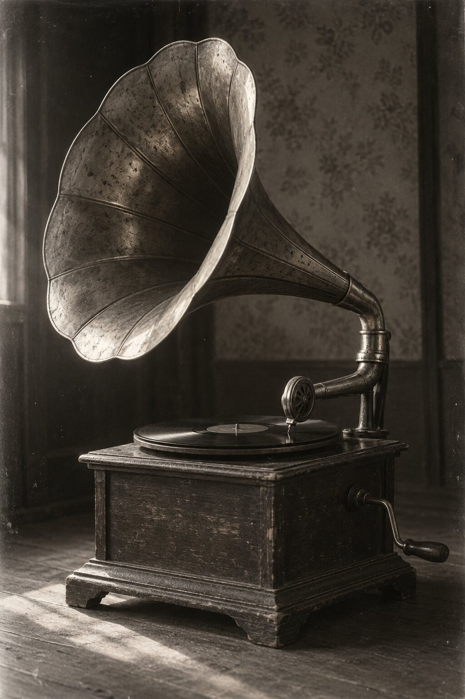
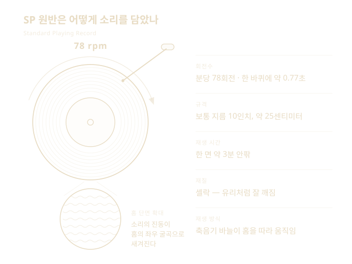
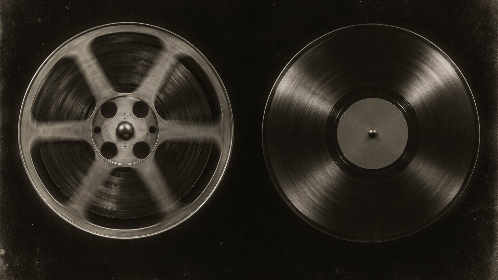

19262026
나운규의 영화 〈아리랑〉과 김금화의 〈밀양아리랑〉
두 개의 아리랑
하나의 1926년 필름에 남은 이야기와
SP 원반에 남은 목소리
1926년 극장에서는 나운규의 영화 〈아리랑〉이 상영되었고, 축음기에서는 김금화가 부른 〈밀양아리랑〉 SP 원반이 돌아갔습니다. 서로 다른 매체에 남은 두 기록이 100년 뒤 다시 우리를 만납니다.
어느 기록부터 보시겠어요
FIRST RECORD
1926년 10월 1일 서울 단성사에서 나운규의 무성영화 〈아리랑〉이 처음 관객을 만났습니다.

나운규는 원작과 각색을 맡고 주연으로 출연했습니다. 영화는 일제강점기를 살아가던 사람들의 아픔과 저항의 정서를 담았고, 개봉 뒤 큰 반향을 일으켰습니다.
〈아리랑〉은 소리가 없는 무성영화였습니다. 그럼에도 영화와 아리랑이라는 노래는 오랫동안 함께 기억되어 왔습니다.

영화는 소리가 없었지만관객의 마음에서는 아리랑이 울렸습니다


영화의 원본 필름은 현재 온전히 전해지지 않습니다. 대신 당시 신문에 실린 개봉 광고와 사진, 나운규와 동료 영화인들이 남긴 글이 그날의 반응을 증언합니다.


그래서 영화 〈아리랑〉의 100주년은 한 편의 영화를 기념하는 데서 끝나지 않습니다. 사라진 화면을 기록으로 다시 만나고, 그 시대 사람들이 느낀 감정을 오늘의 언어로 이어가는 시간이 됩니다.
SECOND RECORD
같은 1926년, 김금화가 부르고 박춘재가 장고 반주한 〈밀양아리랑〉이 SP 음반으로 발매되었습니다.

노래는 부르는 순간 공기 속으로 사라집니다. 그러나 SP 원반은 목소리와 장단을 표면의 홈에 새겼습니다. 축음기의 바늘이 그 홈을 따라 움직이면 백 년 전의 노래가 다시 현재의 소리가 됩니다.
바늘이 원반에 닿는 순간1926년의 밀양아리랑이 다시 깨어납니다
SP는 Standard Playing Record의 줄임말로, 축음기로 재생하던 원반입니다. 보통 분당 78회 안팎으로 빠르게 회전하며, 당시 사람들의 목소리와 연주를 오늘까지 전해 준 소리 기록입니다.

TWO PATHS
영화 속 아리랑과 김금화가 부른 밀양아리랑은 서로 다른 작품입니다. 하지만 두 기록은 같은 시대에 새로운 매체를 통해 사람들에게 전해졌다는 공통점을 가집니다.

| 구분 | 영화 아리랑 | 밀양아리랑 SP 원반 |
|---|---|---|
| 매체 | 필름 | SP 원반 |
| 표현 | 빛과 그림자 | 목소리와 장단 |
| 인물 | 나운규 | 김금화와 박춘재 |
| 첫 만남 | 극장 | 축음기 |
| 100주년 | 개봉 100주년 | 음반 발매 100주년 |
100년 전에는 영사기가 필름을 돌리고 축음기가 SP 원반을 돌렸습니다. 필름은 이야기를 보여주었고, SP 원반은 노래를 들려주었습니다. 서로 다른 두 길을 따라온 아리랑은 2026년의 한 화면에서 다시 만납니다.
두 개의 기록을 따라온 아리랑의 100년은 아직 끝나지 않았습니다.